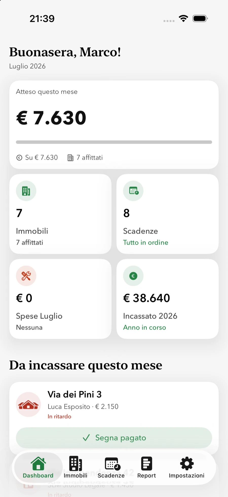
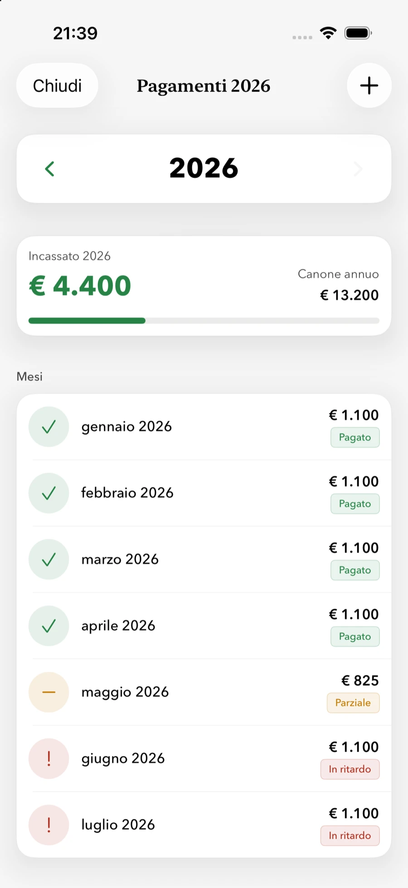
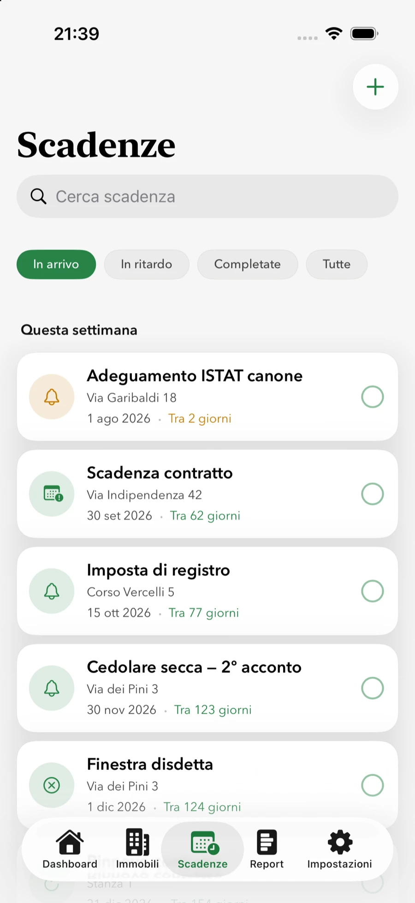
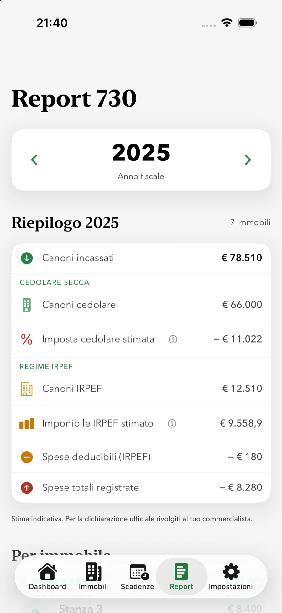

Gratis per il primo immobile · nessuna carta richiesta

I tuoi dati restano tuoi Nessun tracciamento Nessuna pubblicità Sviluppata in Italia
Si parte in cinque minuti
Da zero a tutto in ordine, in tre passi.
1
Aggiungi l'immobile e l'inquilino
Nome, canone, deposito e date del contratto: bastano pochi campi per cominciare.
2
Segna i canoni quando li incassi
Un tocco ogni mese. Quillino tiene il conto, evidenzia i ritardi e prepara la quietanza.
3
A fine anno esporti il report
Incassi, spese e anagrafica immobili in un unico documento, pronto per il commercialista.
Le basi, fatte bene
Tutto quello che serve per gestire un affitto. Niente di più.
Quillino non è un gestionale complicato. Fa poche cose, quelle che contano davvero ogni mese.
PagatoParzialeIn ritardo
Sai sempre chi ha pagato
Segna un canone come incassato con un tocco. Quillino tiene il conto di ogni mese, evidenzia i ritardi e ti fa generare la quietanza PDF da consegnare all'inquilino.
Stato pagamento mese per mese
Ritardi in evidenza, senza dover controllare
Quietanza PDF pronta da inviare

Mai più una scadenza dimenticata
Registro, cedolare secca, rinnovi e disdette: Quillino calcola le scadenze fiscali e contrattuali e te le ricorda in tempo, con l'aggiornamento ISTAT del canone già pronto.
Imposta di registro e cedolare secca
Promemoria di rinnovo e disdetta
Adeguamento ISTAT calcolato per te

Quillino Pro
Il report pronto per il commercialista
A fine anno esporti un quadro completo di incassi e spese per immobile — in PDF o CSV. E un'anagrafica separata con dati catastali, estremi di registrazione del contratto e i canoni incassati mese per mese: tutto in un unico documento per immobile, pronto da girare al commercialista.
Canoni incassati mese per mese, per immobile o inquilino
Cedolare secca e regime IRPEF a confronto · export CSV

Immobili e inquilini
Ogni immobile, stanza e inquilino in ordine: canone, deposito, contatti, dati catastali ed estremi del contratto — con un indicatore di quanto manca alla scheda per essere pronta per il commercialista.
Solleciti WhatsApp
Un tocco per inviare conferma di pagamento o sollecito su WhatsApp, con il messaggio già scritto.
Widget e Apple Watch
L'incassato del mese e le scadenze direttamente in schermata Home e al polso.
Cosa dicono i proprietari
★★★★★5,0 su App Store
Sicuramente la migliore app di questa categoria. Non manca niente, semplice da usare, intuitiva. Assistenza super, fondamentale e molto apprezzata. App in continua evoluzione. Consiglio a tutti, indistintamente dalla quantità di appartamenti o camere da gestire.
Il primo immobile è gratuito per sempre. Quillino Pro parte da €9,99 al mese o €59,99 all'anno — con 7 giorni di prova e possibilità di annullare quando vuoi — oppure €99,99 una volta sola, a vita e senza rinnovo. Pro sblocca immobili illimitati, report fiscale, export CSV, quietanze e widget.
I miei dati sono al sicuro?
Sì. Quillino non ha server propri: i dati restano sul tuo iPhone e, se attivi la sincronizzazione, viaggiano cifrati solo nel tuo iCloud personale. Nessun tracciamento, nessuna pubblicità. Puoi anche bloccare l'app con Face ID.
Serve per la dichiarazione dei redditi?
Quillino prepara un report annuale chiaro di incassi e spese, con cedolare secca e regime IRPEF a confronto, più un'anagrafica con dati catastali, estremi di registrazione del contratto e i canoni incassati mese per mese. Tutto da consegnare al commercialista: non lo sostituisce, ma fa risparmiare tempo a entrambi.
Su quali dispositivi funziona?
iPhone, iPad, Mac con Apple Silicon e Apple Watch. Un unico acquisto vale su tutti i tuoi dispositivi Apple, con i dati sincronizzati via iCloud.
Va bene per gli appartamenti affittati agli studenti?
Sì. Puoi gestire più inquilini nello stesso immobile con canoni per stanza e pagamenti separati, e inserire gli estremi di registrazione del contratto per ogni singolo inquilino — comodo quando ogni stanza ha il suo contratto.
Posso gestire più immobili e coinquilini?
Sì. Con Pro gestisci immobili illimitati, incluse le situazioni con più inquilini nello stesso immobile (canoni per stanza) e i relativi pagamenti separati.
Metti i tuoi affitti in ordine, oggi.
Gratis per il primo immobile. Bastano pochi minuti.
Usiamo Google Analytics per capire come viene usato questo sito. Dati aggregati, nessuna pubblicità.
Privacy Policy